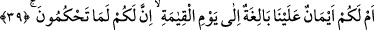

Sâdî Müftî der ki: “Fîhi” ifâdesindeki zamiri kitabın yerine almayabiliriz. Çünkü zâhir
olan bu zamirin, ifâdenin akışından anlaşılan “kıyâmet günü” yerine kullanılmış
olmasıdır.
39. Yoksa, «Ne hükmederseniz mutlaka sizindir» diye sizin lehinize olarak
tarafımızdan verilmiş, kıyâmet gününe kadar geçerli kesin sözler mi var?
Âyette yer alan “aleynâ” kelimesi, yeminler anlamına gelen “eymân” kelimesinin
sıfatıdır. Gelecek “bâliğatun” kelimesi de aynı şekilde sıfattır. Buna göre; “eymânun
aleynâ” ifâdesi, “bizimle ilgili yeminlerle pekiştirilmiş sözler” anlamına gelmektedir.
“
”, doğrulukta ve pekiştirilmekte en son noktaya varmış demektir. Çünkü kalitenin
ve sağlamlığın en uç ve en son noktasına varan her şey Arapçada- “bâliğun” şeklinde
vasıflandırılır. Arapçada “li fulânin aleyye yemînun” ifâdesi, bir başkasına kefil
olunduğunda ona verilen söze uyulacağına dâir yemin edildiğinde söylenilir.
Bu açıklamalar doğrultusunda âyet-i kerîmeye şöyle mânâ verilebilir: Yoksa biz size
garanti mi verdik. Ya da sağlam bir yeminle yemin mi ettik ki, sizin nezdinizde bizim
üzerimize yeminlerle pekiştirilmiş bir söz hâsıl oldu.
“
” ibâresindeki “ilâ” harf-i cerri, “leküm” ifâdesinde mukadder olan bir
kelimeye bağlıdır. Bir başka ifâdeyle burada şöyle denmiş oluyor: “Yoksa sizin lehinize
olarak, verdiğimiz sözden çıkmayacağımıza dâir, kıyâmet gününe kadar geçerli kesin bir
söz mü var? Bundan dolayı o gün biz sizi hakem mi tâyin edeceğiz de sizin
hükmettiğiniz şeyleri size vereceğiz?” Veya “ilâ” harfi, yukarda geçen “bâliğat”
kelimesine bağlıdır. Yahut aynı “ilâ” harfi, “eymânun” kelimesi ile ilişkilidir. Bu
durumda; o güne kadar ulaşan, o güne varan ve herhangi bir yemin ile pekiştirilmiş
olduğu sorulan mesele, kâfirlerin hakem tâyin edilmesi ve Allah’ın onların hükmüne
uymasıdır.
“
” ifâdesi, yukarda yapılan yemînin cevâbıdır. Çünkü “
”
ifâdesi, “
” yâni daha önce geçtiği üzere “biz size yemin mi ettik?”
takdirindedir.
40. Sor onlara: Bu iddiâyı onların hangisi savunacak?
“Sor onlara: Bu iddiâyı; bu hiçbir aklın kabul etmeyeceği akıl dışı hükmü, onların